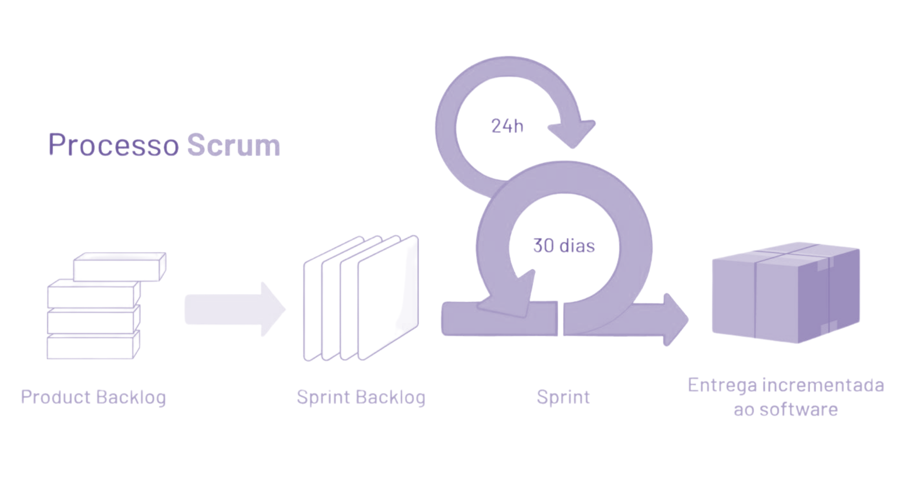

Introdução
O Scrum é um método ágil de gestão de processos, especialmente popular no desenvolvimento de software, mas que se popularizou e já é utilizado em diversas áreas. Ela se baseia em processos curtos de trabalho, chamados de sprints, geralmente com duração de duas a quatro semanas, durante os quais a equipe multidisciplinar trabalha para entregar incrementos dos trabalhos. Nesse método temos três papéis principais: o Product Owner, responsável por definir e priorizar as funcionalidades, de acordo com os requisitos do cliente; o Scrum Master, que facilita e organiza o processo, removendo os obstáculos; e a equipe de desenvolvimento, que executa as tarefas.
O grande diferencial do Scrum é a facilidade de adaptação às mudanças, justamente pelo tempo reduzido das sprints, qualquer novo pedido ou ajuste solicitado pelo cliente pode ser rapidamente incorporado no ciclo seguinte. Isso significa que, invés de esperar até o final de um projeto para corrigir problemas ou ajustar demandas, a equipe pode revisar e adaptar o produto em intervalos frequentes, por meio de reuniões com os clientes para apresentação do projeto em andamento. Essa flexibilidade aumenta a capacidade de responder rapidamente às necessidades do cliente, garantindo que o produto final esteja sempre alinhado às expectativas e aos objetivos do projeto.